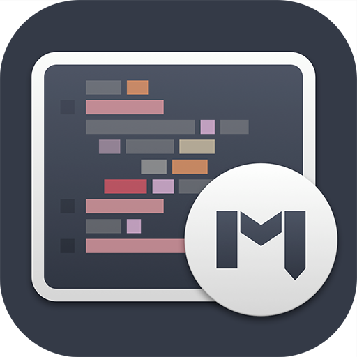
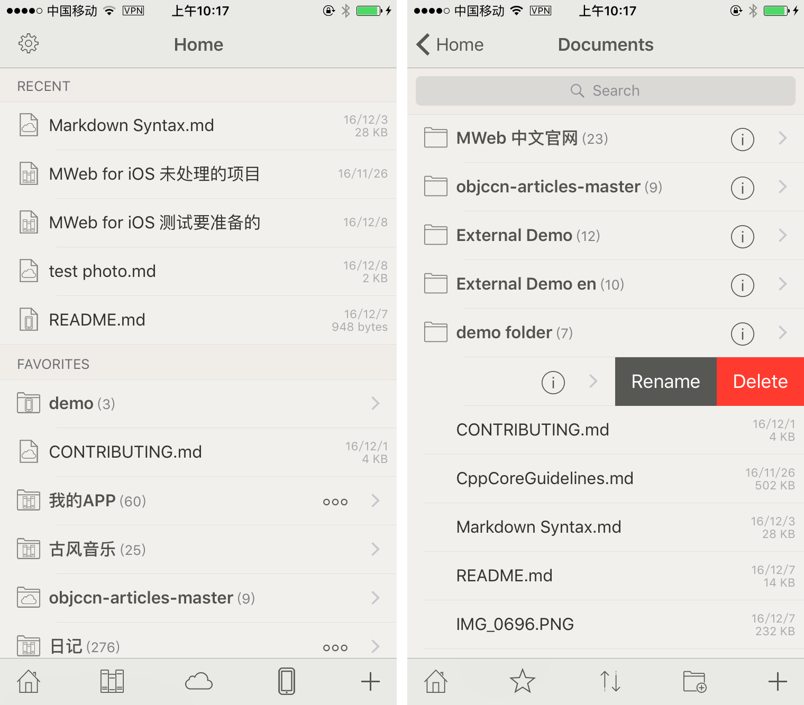
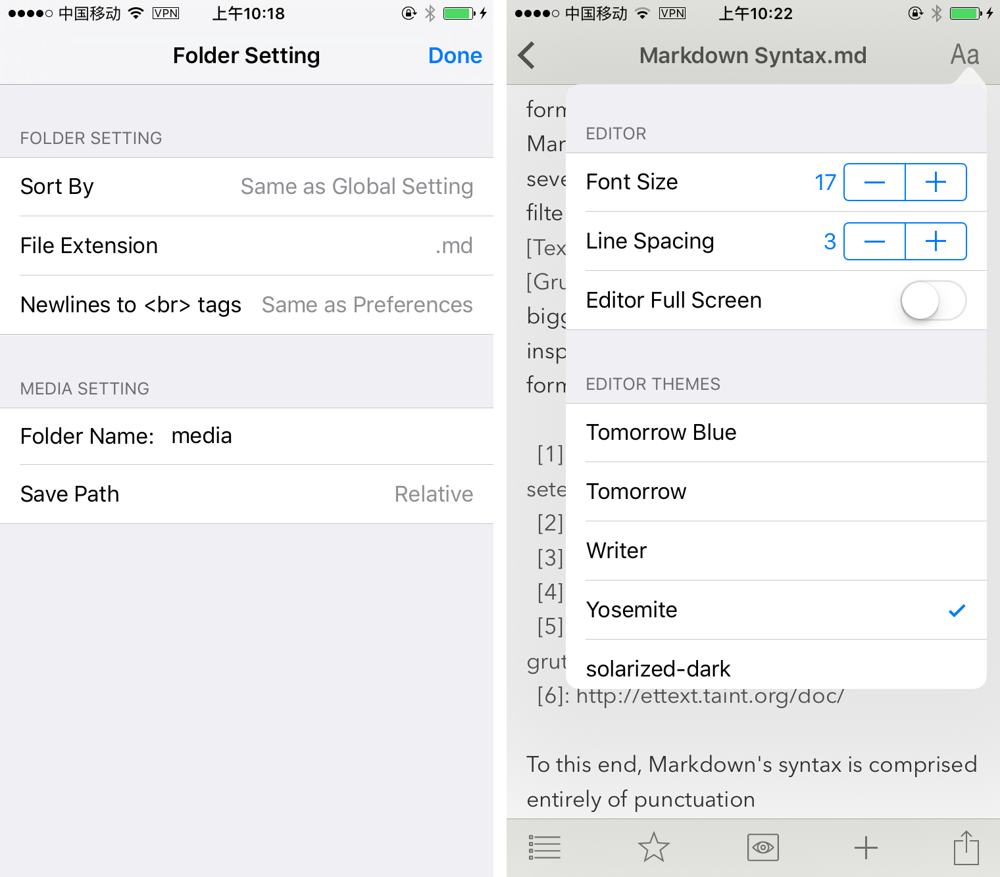
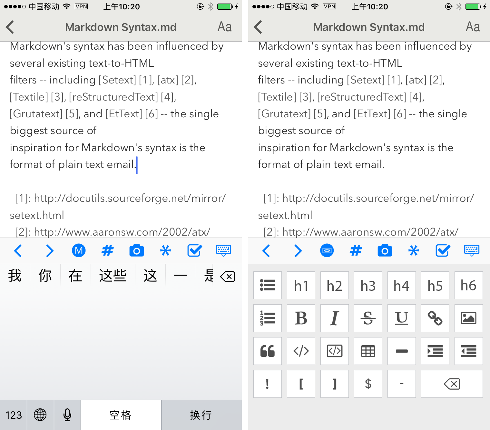
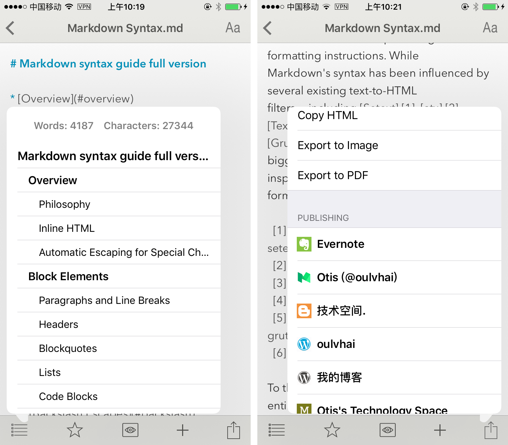
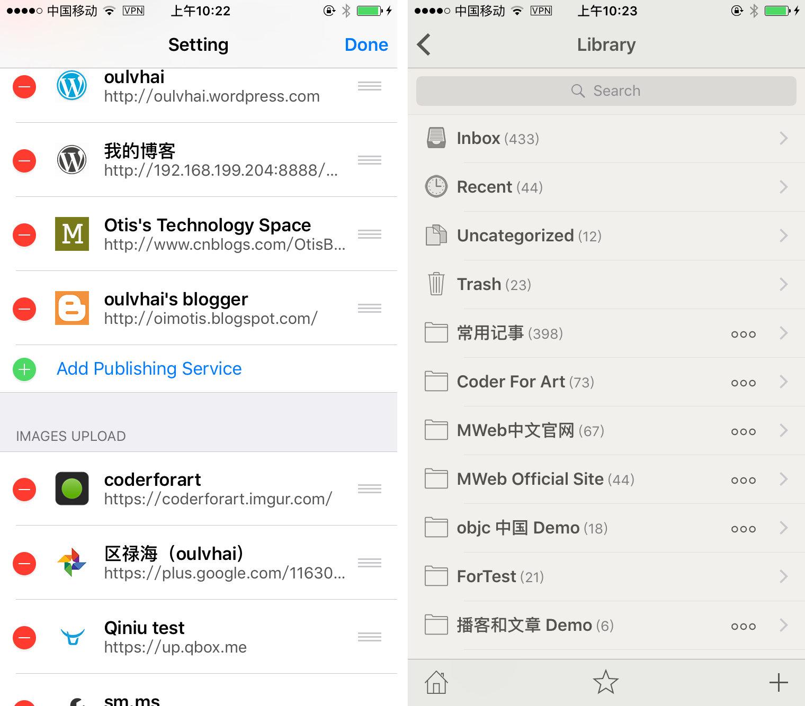
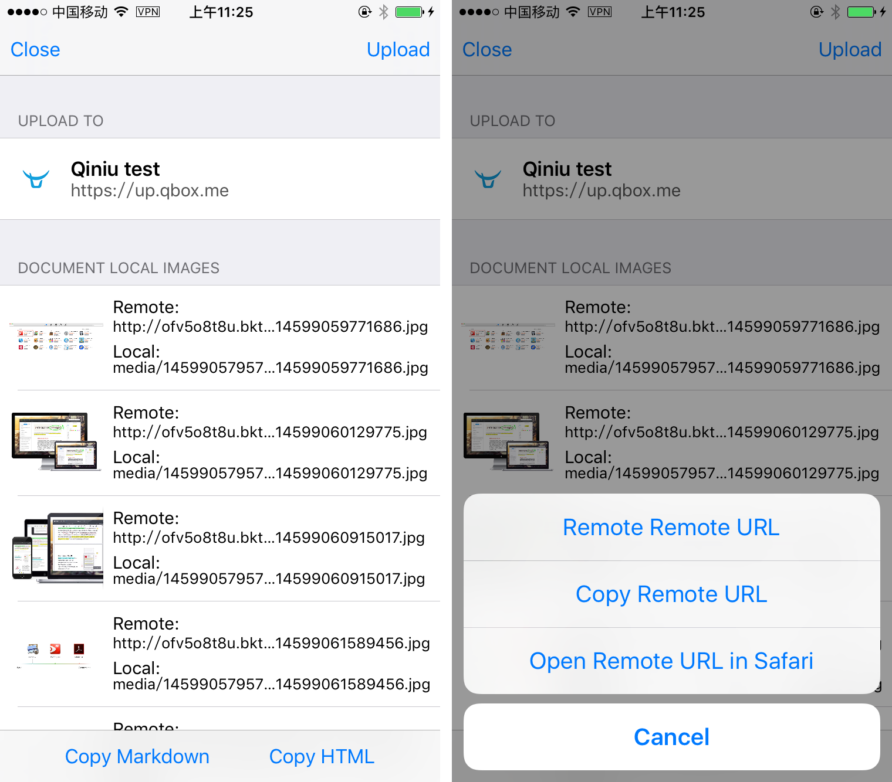

MWeb for iOS 测试版介绍
目前已开始第五次测试：MWeb for iOS 版本发布说明，更新至第五次测试版本

上图为 MWeb for iOS 的图标，再次感谢 @Producter http://weibo.com/u/5642390620 设计的图标
这个是来晚了，本来不应该这么晚的，但是做做停停的，加上还有其他各种事，最长一次长达两个多月没有一点进度。不过今天终于可以拿出来测试了，所以就不多说了，下边介绍一下大概情况。
一开始决定做 iOS 版时，我想像中的 MWeb iOS 版的功能至少有：
- Markdown 支持上要和 Mac 版完全兼容，全面支持 Github Flavored Markdown 语法如 TOC、Table、Fenced code block、LaTex、Task lists、Footnote 等。
- Markdown 编辑上，Mac 版有的特性比如说粘贴插入图片，图片存于本地，外部模式的图片路径设置等也是要有。另外针对手机的特性，自定义一个 Markdown 所用的键盘以方便使用。
- 要支持 Mac 版上所支持的发布服务如 Wordpress、Metaweblog API 、Evernote、Blogger、Medium。
- Mac 版的图床也是要支持。
- 文档库由于使用了数据库，同步不是很灵活，但是至少要支持查看、编辑、新增文档。
目前的测试版，以上所说的 5 点基本上已实现了，所以才敢拿出来请大家测试，请看下图。

上图中，左边的是首页，首页有最近使用的文档和收藏内容这两大块。
最近使用只会显示最近使用的 5 个文档，包括文档库的文档、iCloud 中的文档、在手机本地的文档，可以看边上的图标来识别文档类型。
而收藏不只可以收藏文档，还可以收藏文件夹、文档库的分类，只要是底加的工具栏中有 ✭ 的按钮的项目，都可以收藏，基本上，除了首页，都会有 ✭ 这个按钮，如右边的图所示。
说到右图，请看看左图首页底下的按钮，分别为：首页、文档库、iCloud 文档、手机本地文档、新增文档。 iCloud 文档和手机本地文档都对应为 Mac 版的外部模式的使用方法。
点 iCloud 文档按钮会进入右图界面，左滑可以删除或重命名项目，底下的按钮分别为：回首页、收藏、排序、新增文件夹、新增文档。Mac 版的外部模式中，每个引入的文件夹都会有自己的设置，比如说设置新增文档的默认扩展名、插入的图片的保存文件夹名等，iOS 版也是有这个功能。区别是，iOS 版不用引入，默认为最顶层的文件夹可以设置。如右图，点击 (i) 这个按钮即可进入设置，如下图左边的图。

上图左边为文件夹设置，右边则是打开一篇文档后，右上角的设置按钮，在这里可以快速设置字体大小，切换编辑器样式和预览样式。另外说明一下，Editor Full Screen 这个开关，这个开关打开后，在向上滚动文档时，会像 Safari 的阅读模式下的效果，喜欢全屏查看文档的朋友可以试试。

上图是 MWeb iOS 版的自定 Markdown 的输入键盘的效果，我觉得这个输入模式还算方便，所以就做成这样，右图的键盘还可以增加一些，我也在研究中。

上图是文档大纲和导出、发布功能。底下还有三个按 钮分别是：收藏、预览、增加文档。

上图左边是设置中的增加发布服务和图床上传服务，进入设置页面后，往下拉就能看到了，目前支持的发布服务为：自建 Wordpress、Metaweblog API、Wordpress.com、Evernote、Blogger、Medium。除了 Medium 外，其他服务都支持发布和更新。另外 iOS 版发布到 自建 Wordpress 的时间问题的 Bug 好像是解决了，感兴趣的朋友可以测试一下看看。
图床的支持情况为：Google Photos、Imgur、七牛、自定义，跟 Mac 版一样。
上图右边是文档库的界面，文档库中，直接点击分类会进入该分类下的文档列表，要进入该下的子分类，请点右边的 。。。 按钮。

在，上图左边是图床功能中，选择七牛的效果，右边是点击某项时，可以选择的操作。图床功能暂时只有这 Copy Markdown 和 Copy HTML 这两个功能，iOS 做图床，实在没有什么好想法，如果你有什么建议，欢迎来信。
这里再说明一下 MWeb 中图床的用法，跟一般用法有些不一样。
MWeb 中编辑文档时插入的图片，会复制一份到文档相关的位置，并在文档中进行相对引用。这个位置看设置，这个设置在本文第二张图中有说到。如果设置中的文件夹名称为空，则会直接复制图片到文档所在的文件夹内。所以 MWeb 中插入的图片都会本地图片。当在文档编辑界面，点分享按钮（本文第四张右边的图），选择图床后，会出现上图的界面，界面中会列出文档中的本地图片，当点右上角的上传按钮，会把本地图片上传到图床中。使用底部的 Copy Markdown 和 Copy HTML 都会把文档中的本地图片地址替换成当前图床上传后的图片地址，并复制到剪切板中。MWeb 并暂时没有考虑做删除本地图片并替换原文档中的本地图片地址为图床的功能，需要这个的话，可以用 Copy Markdown，然后再新建文档，再粘贴。
当编辑了文档，比如说插入了新图片，只需要再次调出上图左边的界面，再点一下上传即可，已上传的图片不会再上传，只会上传新图片。
暂时就介绍到这里了，感兴趣的朋友可以申请参加 TestFlight 测试，想参加的话，请按以下格式把你的信息发到 coderforart[at]gmail 即可。
你的姓,你的名字,你的 Email
比如说小明的 Email 为 xxx@xm.com ，发送的样式为： 小,明,xxx@xm.com
注意 “,” 为英文半角。
重要说明：
iPad 版未测试，请不要用在 iPad 上。
特别说明：
文档库现在 Mac 版和 iOS 版处理还不是很好，Mac 版要执行菜单：文件 - 重新加载未分类文档 后，iOS 端增加的文档才会包括在 Mac 版的文档库中，另外同步也有一些问题，Mac 下必须退出后才会同步，这些问题会在几天后 Mac 的更新版修正。